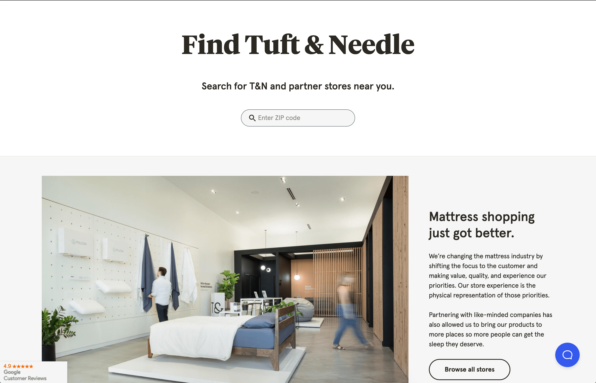

Tuft & Needle Stores Site
This was my largest project at Tuft & Needle, and my first experience building a full featured app in React. This was also my first project pairing with a more senior level developer, Tan Doan. This was such a large project that I'm going to go over the highest level view possible and can give more specific detail if requested.
We were very methodical in our approach to building this app. Tan and I went in separate directions initially, I started setting up some of the static pages, getting used to writing JSX and working in React. Tan started out working through setting up GraphQL.
We came back together when it was time to hook up the GraphQL data to the static pages. This is when we started using props and prop-types. Tan showed me how to pass props down from parent to child components. He showed me how to construct components, how and when it's beneficial to split elements into their own components, and an overview of lifecycle methods.
Overall, this project helped me grow my confidence in my JavaScript skills exponentially. Tan was a great mentor and coach, and I couldn't have asked for a better "on-the-job" React course.